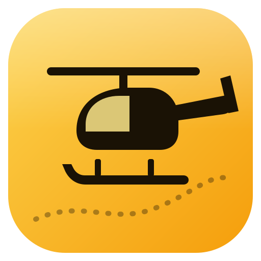

วางแผน • ชั้นข้อมูลสด • โหมดบิน
ข้อมูลภายนอกใช้ประกอบการวางแผนเท่านั้น — OSM ไม่ครบทุกเสา/สายไฟ, ADS-B ไม่เห็นอากาศยานที่ไม่มี transponder ตรวจสอบกับ AIP/NOTAM/MET อย่างเป็นทางการเสมอ
ใช้ประกอบการเดินอากาศ VFR เท่านั้น — ไม่ใช่อุปกรณ์นำร่องหลัก/ระบบหลีกเลี่ยงการชน • น้ำมันคงเหลือคำนวณจากเวลาบิน × อัตราสิ้นเปลือง ตรวจเกจจริงเสมอ

v4.0 • build dev
ดาวน์โหลดแผนที่ฐานตามแนวเส้นทางปัจจุบันเก็บไว้ในเครื่อง เพื่อใช้ในพื้นที่ไม่มีสัญญาณ แผนที่ที่เคยเปิดดูจะถูกเก็บอัตโนมัติด้วย
ข้อมูลทั้งหมด (เส้นทาง, Waypoint, NOTAM ที่เพิ่มเอง, ค่าเครื่อง, Checklist) เก็บในเครื่องนี้เท่านั้น — สำรองเป็นไฟล์เพื่อย้ายไปอุปกรณ์อื่น
ใช้ประกอบการวางแผนและเดินอากาศ VFR เท่านั้น ไม่ใช่แหล่งข้อมูลการบินอย่างเป็นทางการ ตรวจสอบกับ AIP Thailand, NOTAM (AEROTHAI), ข้อมูลอุตุนิยมวิทยา (TMD) และ RFM ของเครื่องทุกครั้ง • แหล่งข้อมูล: CAAT eAIP, AEROTHAI, NOAA AviationWeather, Open-Meteo, RainViewer, NASA GIBS, OpenStreetMap, airplanes.live / adsb.lol / OpenSky, openAIP